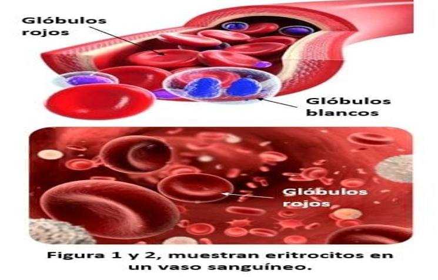
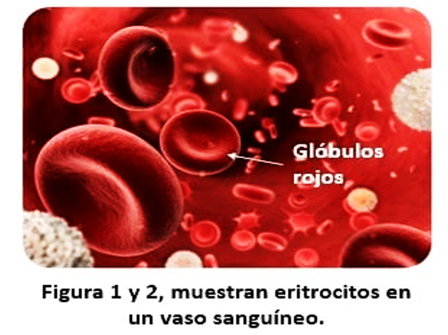
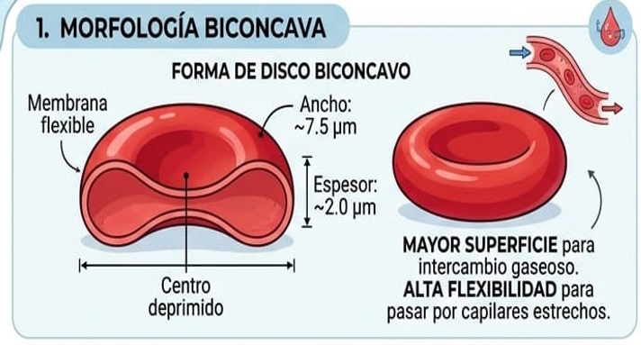
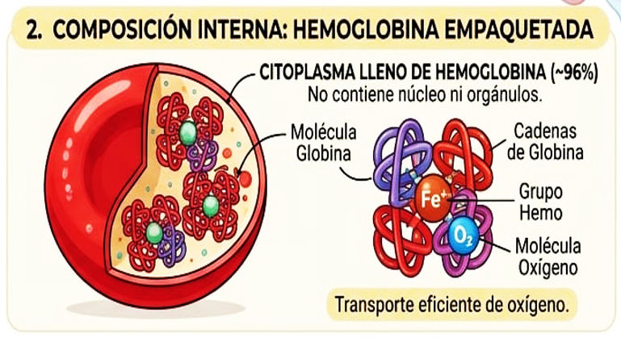
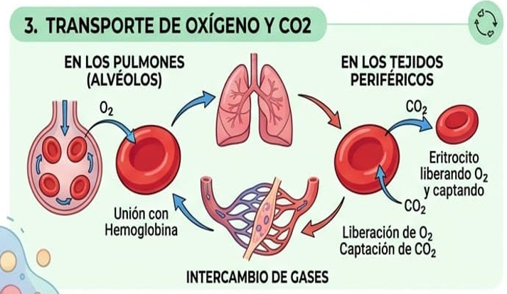
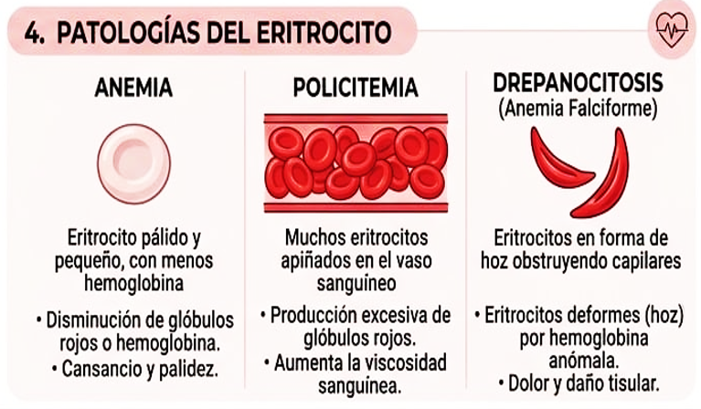
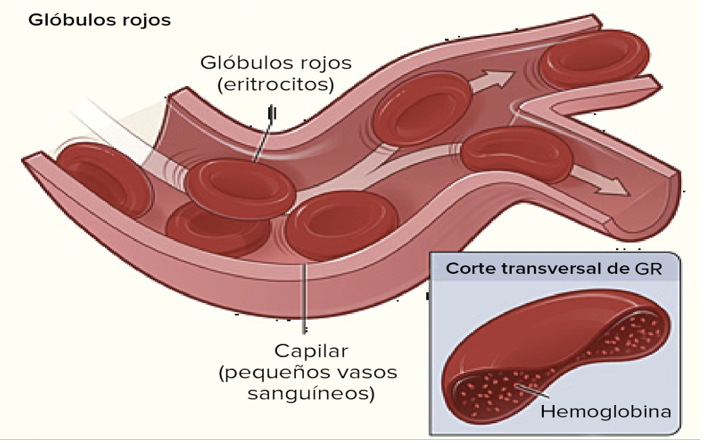
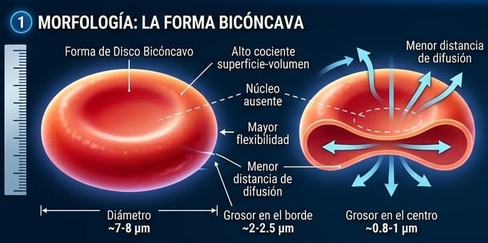
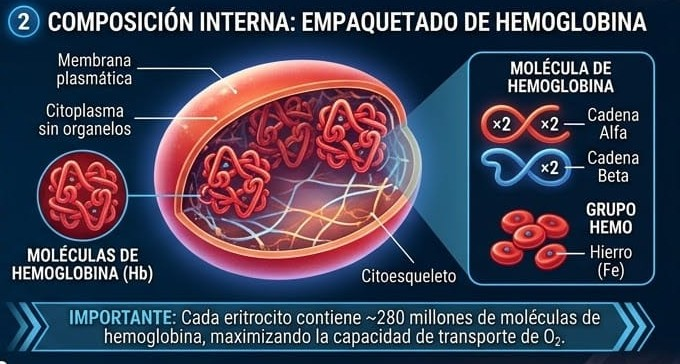
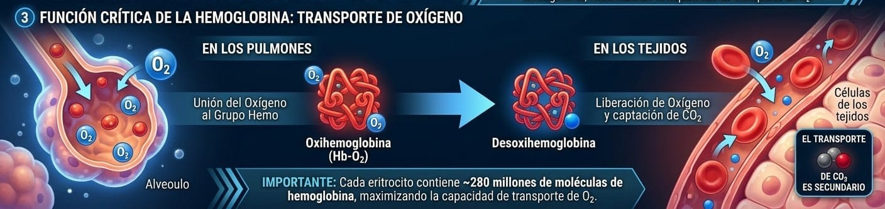

Tecnológico Boliviano Alemán
Por: Jhery Quito Rivera
Estructura, función y patologías


Los eritrocitos tienen forma de disco bicóncavo, es decir, están hundidos en el centro por ambas caras.
Su membrana es muy flexible y resistente.




La hemoglobina es la proteína más importante de los eritrocitos.
Es una hormona producida principalmente por los riñones.
Función: estimula la producción de eritrocitos cuando disminuye el oxígeno.
Debido a que carecen de mitocondrias:
Disminución de eritrocitos o hemoglobina.
Aumento excesivo de eritrocitos.

Estructura y función.


